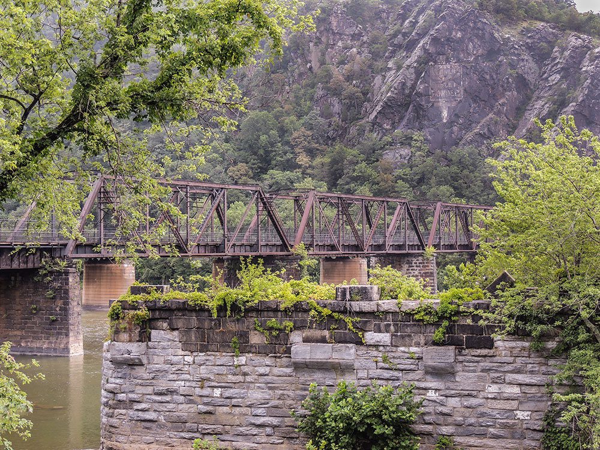

Historic town district featuring preserved nineteenth-century streets, museums, exhibits, river views, and significant landmarks associated with American industry, abolition, and the Civil War.
General Information
Visitor Center: Daily 9:00am to 5:00pm
Historic Lower Town museums and exhibits: Daily 9:00am to 5:00pm
Trails and parking areas: Open from 30 minutes before sunrise until 30 minutes after sunset
Annual Park Pass: Available
America the Beautiful passes accepted
Children under 16: Free
How to Get There
From Charles Town (8 mi): Take WV-51 west toward Harpers Ferry, follow signs for Harpers Ferry National Historical Park, continue to Shoreline Drive, and proceed to the visitor center and park entrance area.
Overview
Harpers Ferry is a small historic town in the eastern panhandle of West Virginia, at the dramatic confluence of the Potomac and Shenandoah Rivers, where West Virginia, Virginia, and Maryland meet. It is best known as the site of abolitionist John Brown's 1859 raid on the federal armory, and it was a strategic prize in the Civil War, changing hands several times. The town is part of Harpers Ferry National Historical Park and is also a major stop on the Appalachian Trail, whose headquarters are located here.
Visitors come to Harpers Ferry to walk the historic Lower Town, with its restored nineteenth-century buildings and museums, to see the confluence of the two rivers from Jefferson Rock, and to hike on the Appalachian Trail. They also come for whitewater rafting and tubing, for the C&O Canal towpath, and for the scenic views from Maryland Heights, and it is about 60 miles from Washington, D.C.
History
Robert Harper established a ferry here in 1747, giving the town its name, and in 1796 President George Washington chose it as the site of a federal armory, which made rifles and attracted industry. On October 16, 1859, abolitionist John Brown and 21 followers seized the armory in an attempt to start a slave uprising; they were captured by U.S. Marines led by Colonel Robert E. Lee, and Brown was hanged. During the Civil War, Harpers Ferry changed hands eight times, and in September 1862, Confederate General Stonewall Jackson captured it with more than 12,000 Union troops, the largest surrender of U.S. forces during the war. After the war, Storer College, one of the first for Black students, was founded here, and floods and the decline of industry left the town quiet.
Sightseeing and Popular Landmarks
Lower Town in the national historical park has restored buildings, such as the John Brown's Fort, the engine house where Brown made his last stand, and museums on the armory, the Civil War, and Black history. Jefferson Rock, a rock outcropping above the town, offers the view that Thomas Jefferson described in 1783 as worth "a voyage across the Atlantic." Harper Cemetery and St. Peter's Church are historic, and the Appalachian Trail Conservancy's Visitor Center is in the Upper Town.
Culture and Museums
The park has museums in Lower Town, including the John Brown Museum, the Black Voices exhibit, the Civil War Museum, and the Storer College exhibit, and rangers lead tours and programs. The Appalachian Trail Conservancy's Visitor Center has exhibits on the 2,200-mile trail, and Harpers Ferry is considered its psychological midpoint. The Harpers Ferry Historical Association and local shops also share the town's history.
Parks
Harpers Ferry National Historical Park covers more than 3,600 acres across three states, with trails along the rivers and to Maryland Heights, with views of the town and the water gap. The Appalachian Trail passes through the town and crosses the Potomac on a footbridge, and the C&O Canal National Historical Park has a towpath for walking and biking. The Shenandoah and Potomac Rivers are popular for whitewater rafting, kayaking, and tubing.
Seasons and Weather
Harpers Ferry has a humid subtropical to humid continental climate. Summers are warm and humid, with highs in the upper 80s°F, and winters are cool, with highs in the 40s°F and about 20 inches of snow. Spring and fall are the most pleasant seasons, and October is especially colorful, though the town is busiest on summer and fall weekends.
Things to Do
Walk Historic Lower Town
Streets lined with restored buildings, museums, and shops interpret industry, abolition, the Civil War, and African American history, including the Black Voices Museum and Storer College/Niagara Movement Museum.
See John Brown's Fort and The Point
The old armory fire engine house is the raid's focal point, and The Point is the classic view of the river confluence.
Take in Jefferson Rock and St. Peter's Church
Overlooks above the town give wide views of the river gap.
Hike, Raft, and Bike
Whitewater rafting, tubing, and mountain biking are popular in the area.
Top Trails
| Trail | Length | Difficulty | Highlights |
|---|---|---|---|
| Jefferson Rock Trail | 0.5 miles round trip | Easy | Famous overlook of the river gap |
| Bolivar Heights Trail | About 2.5 miles round trip | Easy | Battlefield terrain overlooking the town |
| Schoolhouse Ridge North Trail | About 3.5 miles round trip | Easy to Moderate | Battlefield meadows and rolling terrain |
| Loudoun Heights Trail | About 6 miles round trip | Strenuous | Civil War terrain with Blue Ridge views |
| Maryland Heights Trail | 4.5 to 6.5 miles round trip | Moderate to Strenuous | The signature hike, with postcard views of the town and rivers |
This article uses material from Wikipedia as well as information from official tourism and institutional sources. Key references include Harpers Ferry Tourism, National Park Service Harpers Ferry National Historical Park, Appalachian Trail Conservancy, West Virginia Tourism, and National Weather Service Sterling. Wikipedia material is from the articles "Harpers Ferry, West Virginia" and "John Brown's raid on Harpers Ferry", and is available under the Creative Commons Attribution-Share-Alike License 3.0.


